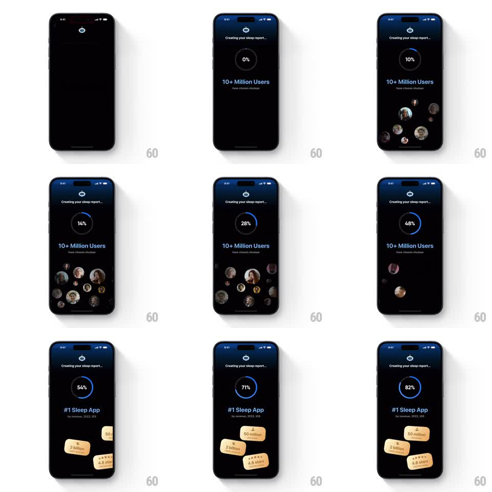

Media
Frame-by-frame

Rebuild this animation 1:1: ShutEye's report-creation loader - "Creating your sleep report..." with a circular progress ring counting up, while floating user avatars drift below, then swap for stat chips as the claim changes.

Rebuild this animation 1:1: ShutEye's report-creation loader - "Creating your sleep report..." with a circular progress ring counting up, while floating user avatars drift below, then swap for stat chips as the claim changes.
## Integration
Integration: stack-agnostic spec - springs given as stiffness/damping, timed motions as duration + curve; map every value to your framework and animation library of choice.
## Scene
A dark loading screen: the ShutEye eye logo, "Creating your sleep report...", a circular progress ring with a percentage counter (0 to 82%+), and a claim line below ("10+ Million Users have chosen shuteye", later "#1 Sleep App by revenue, 2022, iOS"). Under the claim, a loose cluster of round user avatars floats; later the cluster becomes stat chips ("50 million", "2 billion", "4.8 stars").
## Motion spec
Pattern: progress loader with ambient float and content swap, ~5s.
- The ring fills continuously (ease-in-out over the full sequence), the percentage counting up in sync.
- Avatars pop in one by one around the lower half (spring stiffness 350 damping 18, 100ms stagger) and drift gently (2-4px oscillation, randomized 2-3s loops).
- At about 50%, the claim line crossfades to "#1 Sleep App" and the avatars sink and fade (300ms) while the stat chips rise and pop in with the same spring and stagger.
- The chips hold a subtle float until the ring completes.
## Calibration
- Progress never stalls or jumps - the ring and counter stay glued together.
- The avatar-to-chip swap is the only hard beat; everything else is ambient.
## Reduced motion
Ring fills without float or stagger; contents swap via crossfade.
## Don't miss
- The ring's fill is a bright arc over a dim track with rounded caps.
- Avatars vary in size, larger ones forward - a depth cluster, not a row.